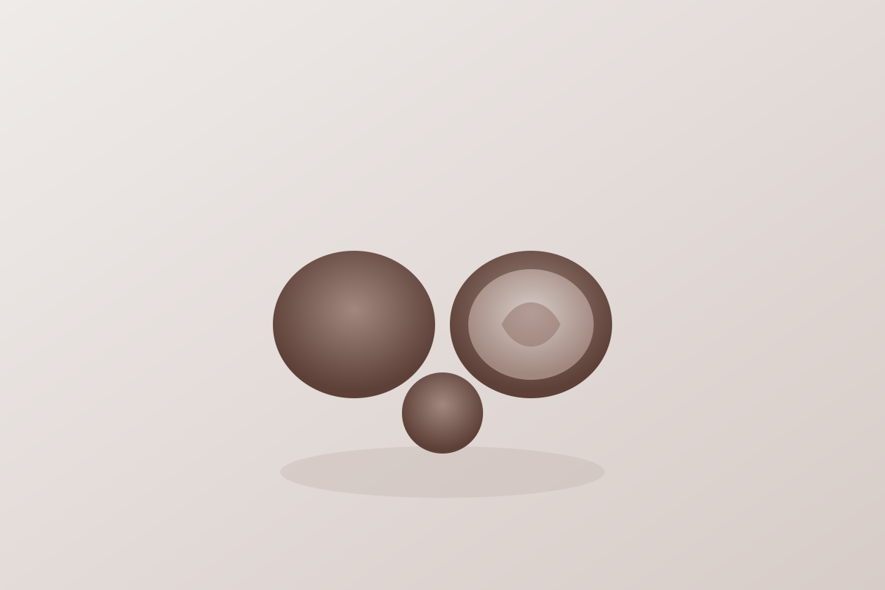

Walnut
Quick answer
Walnuts fit well into anti-inflammatory food patterns because they are a practical nut that adds healthy fats and works in snacks or breakfast toppings.
What it is
Walnuts are edible tree nuts commonly eaten on their own or added to oats, yogurt, salads, and baked foods.
Why walnut may support an anti-inflammatory diet
Walnuts are useful because they are easy to add to recurring meals and snacks, helping people build a more consistent whole-food pattern.
Key nutrients and compounds
- Healthy fats
- Fiber
- Magnesium
- Copper
Potential health benefits
- Supports simple snack structure
- Adds texture and fat to breakfast bowls
- Pairs well with fruit and grains
How to eat walnuts
- Add walnuts to oats or yogurt
- Use them in simple trail mixes
- Top salads or grain bowls with a small handful
Shopping and storage
Keep walnuts sealed and cool to help preserve freshness.
FAQ
Are walnuts anti-inflammatory?
They are commonly included in anti-inflammatory food patterns because they are an easy whole-food source of healthy fats and practical meal use.
Evidence note
Walnuts are described here as a supportive food within a broader eating pattern, not as a treatment by themselves.
The strongest factual framing on this page is limited to established nutrition context such as healthy fats, fiber, and practical snack and breakfast use. The page does not claim that eating walnuts guarantees a specific health outcome.